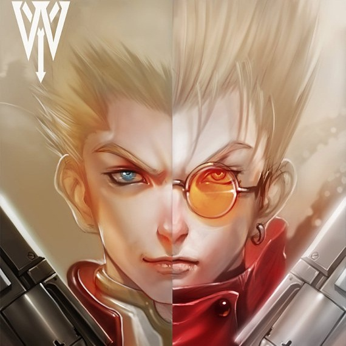

Canvas SVG demo
Using image tag

Using Canvas
Using SVG
Layer 1
yurt
svg-edit
SVG image cropped at 320px x 240px
Layer 1
yurt
svg-edit
Using SVG viewbox and preserve aspect ratio with 50% Scaling
Layer 1
yurt
svg-edit
w3c Validator results